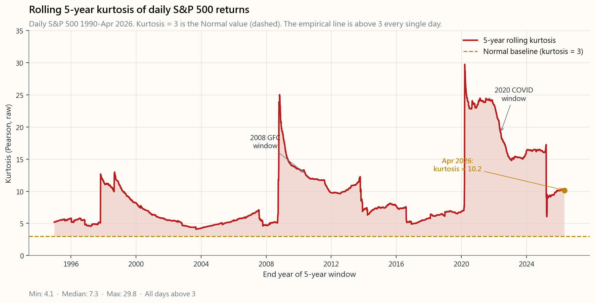
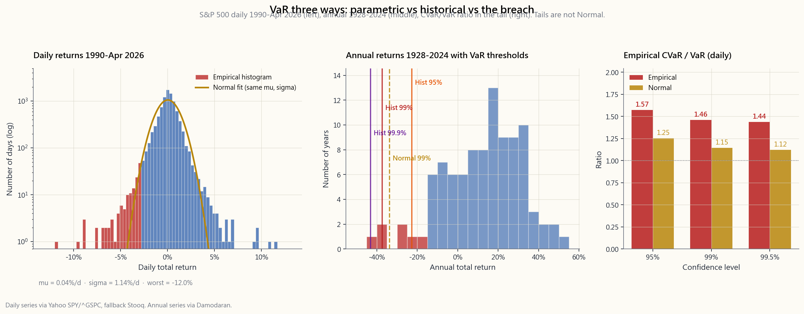

Week 42: VaR and Risk Models — Parametric, Historical, Monte Carlo, and Why All Three Break in the Tails
1. Why This Is Important
Last week was the conceptual frame for risk management: position sizing, stop rules, scenario thinking, and how a portfolio's pain is budgeted across positions. This week we put numbers on it.
Value at Risk (VaR) is the single most-quoted risk number on the planet. Every bank, hedge fund, pension and insurance balance sheet runs a VaR system somewhere in its plumbing. **CVaR / Expected Shortfall** is its smarter cousin — required by Basel III since 2016 because plain VaR failed catastrophically in 2008. Both descend from the same idea: take a probability distribution of possible portfolio outcomes, look at how bad the bad days are, and quote a single dollar number.
You need to understand them for four reasons.
is forty million," that is a precise, falsifiable claim. If you cannot translate it into "they expect a loss of at least \$40m on one trading day in every hundred, and we have no idea how bad the worst one is," you cannot evaluate the statement.
assumes returns are normal — which is wrong, especially in the tail. Historical VaR resamples the past — which only ever looked like the past you happened to draw from. Monte Carlo VaR makes you specify a model — and your model is a guess. The methods disagree most where it matters most: at the 99% and 99.9% percentile, and in the worst week of every decade.
of daily US-equity returns runs 7-15 over 5-year windows since 1990, never close to the Normal value of 3. Parametric VaR at 95% underestimates real losses by ~10-30%. At 99% it underestimates by 2-5×. At 99.9% it is essentially science fiction.
Basel Committee replaced VaR with Expected Shortfall in the 2016 Fundamental Review of the Trading Book precisely because CVaR averages the whole tail rather than reading one point on the distribution. It is more conservative, harder to game, and coherent in a mathematical sense VaR is not.
The marshmallow conclusion at the end of this lesson: *parametric VaR is fine at 95%, useless at 99.9%, and the difference between the two ate Long-Term Capital Management in 1998, the structured-credit desks in 2008, and the leveraged vol-targeters in March 2020.*
2. What You Need to Know
2.1 The Definition — One Sentence, Three Parameters
Value at Risk is the **largest loss not exceeded with a given probability over a given horizon**. Three parameters, always:
99.9%. The complement $1-\alpha$ is the tail probability we are measuring — at 99% we are looking at the worst 1% of outcomes.
year. Bank trading desks use 1-day. Basel uses 10-day. Asset allocators use 1-month or 1-year.
The textbook sentence:
1-day 99% VaR = \$5,000,000 means: on 99 trading days out of every 100, we expect the portfolio to lose less than \$5,000,000 over a single day. On the remaining 1 day, the loss may be larger — and VaR is silent on how much larger.
That last clause is the big one. VaR tells you the threshold of the loss that will be exceeded $1-\alpha$ of the time. It tells you nothing whatsoever about how bad the breach will be when it comes. Two portfolios can have identical 99% VaRs and wildly different 99.9% VaRs — one capped at -\$10m, the other unbounded.
2.2 Method 1 — Parametric (Variance-Covariance)
The fastest, oldest, and most often wrong method. Assume daily returns are Normal with mean $\mu$ and standard deviation $\sigma$. Then the VaR at confidence level $\alpha$ over horizon $T$ is:
$$ \text{VaR}_\alpha = -\big(\mu T - z_\alpha \,\sigma\sqrt{T}\big)\,V $$
where $V$ is the portfolio value and $z_\alpha$ is the standard Normal quantile. The classic $z$ values:
| $\alpha$ | $z_\alpha$ | Tail prob. |
|---|---|---|
| 90% | 1.282 | 10% |
| 95% | 1.645 | 5% |
| 97.5% | 1.960 | 2.5% |
| 99% | 2.326 | 1% |
| 99.5% | 2.576 | 0.5% |
| 99.9% | 3.090 | 0.1% |
| 99.99% | 3.719 | 0.01% |
Plug in the S&P 500 daily numbers: $\mu \approx 0.04\%$ per day, $\sigma \approx 1.1\%$ per day. On a \$1,000,000 portfolio:
- 1-day 95% VaR: $-(0.0004 - 1.645 \times 0.011) \times 1{,}000{,}000 \approx \$17{,}700$.
- 1-day 99% VaR: $\approx \$25{,}200$.
- 1-day 99.9% VaR: $\approx \$33{,}600$.
That single observation is enough to tell you the model is wrong.
The strength of parametric VaR: it is fast, additive, and easy to push through a portfolio with thousands of positions. Variance adds, correlations are linear, you can compute it in a spreadsheet.
The weakness: $\sigma$ is computed on quiet windows and then used to predict noisy ones, and the Normal distribution has thin tails that nobody's portfolio has ever seen. *At 95% it is an estimate. At 99% it is a guess. At 99.9% it is fiction.*
2.3 Method 2 — Historical Simulation
Drop the Normal assumption entirely. Take the last $N$ days of portfolio returns (typically 250 to 1,000 trading days), sort them, and read the empirical $1-\alpha$ percentile directly off the sorted list. If $N=1000$ and $\alpha=99\%$, your 99% VaR is the 10th worst return in the sample.
Worked example. Take SPY's last 1,000 trading days, sort, the 10th worst is roughly $-3.6\%$. On a \$1m portfolio, 1-day 99% historical VaR is \$36,000 — roughly 40% larger than the parametric number above. The history "knows" about COVID, knows about 2018 Q4 vol, and weights those days equally with quiet ones.
The strength: makes no parametric assumption. If the past has fat tails, your VaR has fat tails for free.
The weakness: you only see what happened. If your 1,000-day window ends in October 2007, you have no 2008 in your data and your 99% VaR will read like 95% the moment the regime breaks. The window is either too short (unstable, no tails) or too long (mixing regimes that no longer apply).
The cure is partial: age-weighted bootstrap (recent days count more) or filtered historical simulation (rescale yesterday's returns to today's volatility). Both push the model toward what a practitioner already does intuitively when looking at a chart.
![Three-panel chart of daily-return distributions and VaR. Left panel: histogram of S&P 500 daily total returns 1990-April 2026, with a Normal distribution of the same mean and standard deviation overlaid. The empirical histogram has visibly thicker shoulders below -2% and a long left tail that the Normal curve cannot reach. Middle panel: histogram of S&P 500 annual total returns 1928-2024 from the Damodaran dataset, with vertical markers at the 95%, 99% and 99.9% empirical VaR thresholds — and at the parametric Normal-fit VaR, which sits well to the right of the historical thresholds at the 99%+ levels. Right panel: empirical CVaR / VaR ratio computed at three confidence levels on the daily series, showing the ratio rising from ~1.20 at the 95% level to ~1.45 at the 99.5% level, illustrating that the deeper into the tail you go, the worse the breach.](image/week42_var_methods.png)
2.4 Method 3 — Monte Carlo Simulation
Specify a model. Simulate $M$ paths from it. Compute portfolio P&L for each path. Sort. Read percentile.
The model can be Normal (in which case Monte Carlo agrees with parametric, with sampling noise). Or it can be Student-t with low degrees of freedom (heavier tails). Or a regime-switching mixture (quiet days from one Normal, noisy days from another). Or GARCH (volatility today depends on volatility yesterday). Or a jump- diffusion (Normal noise plus occasional Poisson jumps).
The flexibility is total. A typical "modern" Monte Carlo for daily US-equity portfolios uses a Student-t with 5-7 degrees of freedom — producing tails that approximately match the empirical distribution. This is the model bank-prop desks adopted after 2008.
Strength: can capture nonlinearities (options, structured products), path-dependent payoffs (barriers, callables), and any non-Normal distribution you can write down.
Weakness: garbage in, garbage out. If your model is wrong in the tail, your Monte Carlo VaR is wrong in the tail — with the illusion of precision. Running 100,000 paths from a wrong model gives you a confidently wrong answer.
The honest practitioner runs all three methods side by side, treats the spread between them as the irreducible uncertainty in the number, and reports the most conservative (largest) one.
2.5 CVaR / Expected Shortfall — The Average of the Tail
CVaR (also called Expected Shortfall, ES) answers the question VaR ducks: *given that the loss has exceeded the VaR threshold, what is the average loss?*
$$ \text{CVaR}_\alpha = \mathbb{E}[L \mid L \geq \text{VaR}_\alpha] $$
For a Normal distribution and continuous loss $L$, CVaR has a closed form:
$$ \text{CVaR}_\alpha = \mu + \sigma\,\frac{\phi(z_\alpha)}{1-\alpha} $$
where $\phi$ is the Normal PDF. The ratio $\text{CVaR}/\text{VaR}$ under the Normal model is roughly 1.25 at 95% and 1.15 at 99% — meaning the average breach loss is only 15-25% bigger than the VaR threshold under the assumption of Normality. Empirically on US equities the ratio is closer to 1.30-1.50, especially at the 99%+ levels. Tails are not just fatter than the Normal predicts; the depth of breach is also larger.
CVaR is coherent (in the formal sense of Artzner-Delbaen-Eber- Heath, 1999) — meaning it satisfies four properties any reasonable risk measure should: monotonicity, sub-additivity, positive homogeneity, and translation invariance. VaR is not coherent — it fails sub-additivity for heavy-tailed distributions, meaning the VaR of two portfolios combined can be larger than the sum of their individual VaRs. That mathematical pathology has practical consequences: VaR can incentivise hidden tail-risk concentration that CVaR penalises. Basel III replaced VaR with ES at the 97.5% level for exactly this reason.
2.6 Why All Three Methods Break in the Tails
The fundamental problem is summarised in one number: kurtosis.
A Normal distribution has kurtosis exactly 3 (or excess kurtosis zero). Higher kurtosis means fatter tails — more probability mass beyond ±3σ than the Normal allows.
What does the data say? Compute rolling 5-year kurtosis on daily S&P 500 returns since 1990 and the answer is: never close to 3. Mostly between 7 and 15. The 1987-window prints above 30. The 2008-window prints around 12. Even quiet windows like 2003-2007 print around 5.

The implications for VaR:
- At 95%: parametric VaR underestimates by 5-15%. Tolerable.
- At 99%: parametric VaR underestimates by 30-100%. Material.
- At 99.9%: parametric VaR underestimates by 2-5×. Useless.
- At 99.99%: parametric VaR is a polite fiction.
The right lesson is not "use a more complicated VaR." The right lesson is *risk numbers are estimates, all of them, and the tail is where estimates lie hardest*. The tail wags the dog. Your risk system must include explicit stress tests at multiples of the quantitative VaR, regardless of what the model says is "impossible."
2.7 Putting It All Together — A Practical Framework
How a serious investor uses these tools:
Student-t with df=5-7 is the standard choice). Look at the spread.
the 99% VaR for thin-tailed distributions and substantially more conservative for thick-tailed ones. Basel uses 97.5% CVaR; you should too.
in a day), 2008 (-9% in a day, -38% in a year), 2020 March (-12% in a day, -34% in a month), 2022 (paired bond+stock drawdown). These are not VaR events; these are plan-for-them events.
barbell. Most of the book in defensive holdings sized for normal vol; a small high-conviction tail in instruments that cap your loss (long options, deep cash buffers, defined-risk spreads).
reports at 99%, double it for sleep purposes. The cost of being too conservative is a few basis points of opportunity. The cost of being too aggressive is the obituary section of the *Wall Street Journal*.
**Horace's view — VaR is institutional theatre, and the retail fix is structural, not statistical.** My own read of these models, after watching them fail in 1998, 2008, and March 2020, is that VaR exists primarily because regulators and risk committees need a single number to put on a slide. It is theatre. It systematically under-reports exactly the regimes where you actually need a risk number — the vol-on tail expansions, the regime turns from compression to expansion, the days when the option tail wagging the equity dog produces moves the model says are impossible. Kurtosis of 7 to 15 versus the assumed 3 is not a small calibration issue; it is the model being the wrong shape. The big banks discovered this in tears, every cycle, and the response is always to add another bell and whistle to the model rather than admit the model class is wrong.
The retail answer is not a better VaR. It is a better *portfolio shape*. I run a barbell with a small persistent long-volatility and tail-hedge sleeve sized so the worst-case loss on the hedged book is the known premium I pay for the hedge — not a model output that lies in the tail. The asymmetry sleeve is bounded by structure (long options, defined-risk spreads, deep cash buffers) so the CVaR on the worst week is a number I chose at position-sizing time, not a number a Student-t tells me after the fact. That is the inversion: instead of computing risk on a portfolio shape that has none, choose a portfolio shape whose worst case is bounded *by construction*, and let the VaR number be a sanity check rather than the load-bearing input.
3. Common Misconceptions
VaR is the threshold beyond which 1% of outcomes lie. It says nothing about how far beyond. The worst-case loss is unbounded.
for the threshold itself, but not for the *quality of the estimate*. The 99.9% empirical VaR computed on 1,000 trading days uses literally one observation. The estimator's variance is enormous. More confidence ≠ more knowledge.
fine."** They typically agree at 95% and diverge at 99%+. Quiet periods make the disagreement small even when the underlying model is wrong.
Expected Shortfall at 97.5% in 2016, fully phased in for the FRTB in 2023. If you are still quoting raw VaR, you are 7+ years behind.
Only the sampling noise is smaller. The model error — the wrongness of the chosen distribution — is unchanged. A million paths from a Normal model still gives you Normal-tail answers.
thin-tailed portfolios. For heavy-tailed portfolios with extreme joint dependence (correlated tail events) VaR can fail sub-additivity — combined VaR can exceed the sum of individual VaRs. CVaR does not have this pathology.
IID Normal returns. Real returns have volatility clustering and serial correlation. The square-root rule overstates the gain from time-diversification of risk in stress periods.
crudely. A model can pass 250-day backtests with the right number of breaches and still have wildly wrong CVaR — the threshold matches but the tail mass does not.
subjective. VaR's subjectivity is hidden in the choice of distribution and lookback window; stress tests' is openly stated in the scenario.
distributions yes, ratio ~1.25 at 95%. For empirical equities, CVaR can be 1.5× VaR at 99% — that "small adjustment" is the difference between a survivable loss and a margin call.
4. Q&A Section
Q: My broker shows me 1-day 95% VaR. Should I care? A: It is a baseline anchor — when it says \$200, you should not be shocked by a \$200 loss. But do not stop there. Mentally double it for 99% (which retail platforms rarely show), triple it for 99.9%, and run a manual scenario: "what if the S&P falls 10% in a single day?" That last number is the only one that matters for sleeping at night.
Q: Why does Basel III use 97.5% rather than 99%? A: Two reasons. First, 97.5% CVaR is roughly equivalent in conservatism to 99% VaR under typical fat-tailed equity distributions, so the regulatory bite stays similar. Second, CVaR estimates at 97.5% have lower sampling variance than at 99% because they average more observations. It is a sweet spot of conservatism and statistical stability.
Q: Does VaR work for options portfolios? A: Parametric VaR fails badly for options because their P&L is non-linear in the underlying. The "delta-gamma" approximation (linear plus quadratic) helps for small moves but breaks for tail events. Monte Carlo, properly applied, is the right tool — simulate underlying paths, revalue the options under each path, sort the P&L. Historical simulation also works well.
Q: How long should the lookback window for historical VaR be? A: Trade-off. Shorter (250 days) is responsive to current regime but omits older crises. Longer (1,000-2,500 days) sees more crises but mixes regimes. The Basel standard is 250 days for the unscaled window plus a stressed-period overlay. Practitioners often use 500-750 days as a default.
Q: Is square-root-of-time scaling reliable? A: For mean-reverting series (volatility, credit spreads) it overstates N-day risk. For trending series (long-only equity in a bull market) it understates. For IID series it is exact. Real series are none of these in stress periods. Treat it as a rough guide, not a calculation.
**Q: Why do banks prefer 1-day VaR but pension funds prefer 1-year VaR?** A: Frequency of action. A bank can change its book in a day and manages to a 1-day horizon. A pension fund's liabilities are multi-decade and its rebalancing horizon is annual; a 1-day VaR is operationally useless to a CIO who cannot trade the way a prop-desk can.
Q: What is the relationship between VaR and the Kelly criterion? A: They answer different questions. Kelly is *forward-looking position sizing for a known edge. VaR is backward-looking risk quantification of a current position*. A Kelly-sized position has a known relationship to its expected loss and ruin probability; VaR gives you the percentile of that loss distribution. Both should be in your kit.
**Q: How does CVaR / VaR change for a portfolio with embedded short options?** A: CVaR/VaR can blow up. A short out-of-the-money put has limited expected loss (good for VaR if the strike is far) but unlimited tail loss when the strike is breached (terrible for CVaR). Two strategies with identical 95% VaR can have wildly different 99.9% CVaR if one is short tail and the other is not. This is exactly the type of "hidden tail" Basel was trying to root out.
**Q: Why does my historical-VaR number jump every time the worst day in the window rolls off?** A: Because the historical method literally reads percentiles of a finite sample. When April 2020 falls out of the 1,000-day window in mid-2024, the 99% VaR drops mechanically by ~30% — *despite no change in the actual portfolio*. This is an artefact of the method, not a real reduction in risk. Use age-weighting or stressed-period overlays to smooth.
**Q: Is there a number that combines VaR, CVaR, and stress test into one?** A: Not really, and that is the point. Risk is multi-dimensional. A portfolio has a normal-day risk (vol), a quantile risk (VaR), an average-tail risk (CVaR), a worst-case risk (stress test), a tail-dependence risk (joint extremes), and a liquidity risk (can you actually exit?). Compressing those into one number throws away exactly the information you need when things break.
Q: What is the simplest "good enough" VaR I can compute at home? A: Take the last 500 daily returns of your portfolio, sort, read the 5th-percentile (99% VaR) and 25th-percentile (95% VaR). Compute the average of the worst 5 returns — that is your 99% CVaR. You will be more conservative than 90% of professional VaR systems and be using only Excel.
第42週：風險值與風險模型——參數法、歷史法、蒙地卡羅法，以及為何三種方法在尾部均告失效
1. 為何此議題至關重要
上週我們建立了風險管理的概念框架：倉位管理、止蝕規則、情景思維，以及如何在各倉位之間分配投資組合的潛在損失。本週我們將為此賦予具體數字。
風險值（VaR） 是全球引用最廣泛的單一風險指標。每家銀行、對沖基金、退休基金與保險公司的資產負債表，某處都在運行一套風險值系統。條件風險值（CVaR）/ 預期損失（Expected Shortfall） 是其更精密的表親——自2016年起已獲巴塞爾協議III強制採用，原因正是普通風險值在2008年災難性地失效了。兩者源自同一理念：建構投資組合可能結果的概率分佈，審視壞日子究竟有多壞，並以單一美元數字呈現。
理解這兩個指標有四個原因。
本課的核心結論：參數法風險值在95%置信水平尚算可用，在99.9%水平則毫無用處，而這兩者之間的差距，正是1998年長期資本管理公司、2008年結構性信貸部門，以及2020年3月槓桿波動率目標基金相繼崩潰的根源。
2. 你需要掌握的知識
2.1 定義——一句話，三個參數
風險值是在給定概率及給定時間範圍內，不被超過的最大損失。三個參數，缺一不可：
教科書式的表述：
1日99%風險值 = 5,000,000美元 意味著：在每100個交易日中，有99天我們預期投資組合在單日損失低於5,000,000美元。在其餘1天，損失可能更大——而風險值對「大多少」一字不提。
最後一句才是關鍵。風險值告訴你的是損失超過 $1-\alpha$ 概率的門檻，對門檻被突破時損失究竟多嚴重，完全沉默。兩個投資組合可以擁有相同的99%風險值，卻有截然不同的99.9%風險值——一個上限為負1,000萬美元，另一個則毫無上限。
2.2 方法一——參數法（方差-協方差法）
最快速、最古老，也最常出錯的方法。假設日回報呈正態分佈，均值為 $\mu$，標準差為 $\sigma$。則在置信水平 $\alpha$ 及時間範圍 $T$ 下，風險值為：
$$ \text{VaR}_\alpha = -\big(\mu T - z_\alpha \,\sigma\sqrt{T}\big)\,V $$
其中 $V$ 為投資組合價值，$z_\alpha$ 為標準正態分位數。經典 $z$ 值：
| $\alpha$ | $z_\alpha$ | 尾部概率 |
|---|---|---|
| 90% | 1.282 | 10% |
| 95% | 1.645 | 5% |
| 97.5% | 1.960 | 2.5% |
| 99% | 2.326 | 1% |
| 99.5% | 2.576 | 0.5% |
| 99.9% | 3.090 | 0.1% |
| 99.99% | 3.719 | 0.01% |
代入標普500的每日數據：$\mu \approx 0.04\%$/日，$\sigma \approx 1.1\%$/日。以1,000,000美元投資組合計算：
- 1日95%風險值：$-(0.0004 - 1.645 \times 0.011) \times 1{,}000{,}000 \approx \$17{,}700$。
- 1日99%風險值：$\approx \$25{,}200$。
- 1日99.9%風險值：$\approx \$33{,}600$。
單憑這一個觀測值，便足以告訴你這個模型是錯的。
參數法風險值的優勢：快速、可加性強，易於應用至擁有數千個倉位的投資組合。方差可加，相關性為線性，可在試算表中完成計算。
劣勢：$\sigma$ 在平靜窗口中計算，卻用於預測動盪時期；而正態分佈的薄尾，是任何人的投資組合從未真正見過的。在95%水平，它是估算。在99%水平，它是猜測。在99.9%水平，它是虛構。
2.3 方法二——歷史模擬法
完全拋棄正態假設。取過去 $N$ 日的投資組合回報（通常250至1,000個交易日），排序，直接從排序後的列表讀取 $1-\alpha$ 分位數的實證值。若 $N=1000$，$\alpha=99\%$，則99%風險值即為樣本中第10差的回報。
實例演示。取SPY最近1,000個交易日並排序，第10差的回報約為 $-3.6\%$。以100萬美元投資組合計算，1日99%歷史法風險值為36,000美元——約比上述參數法數字高出40%。歷史數據「記得」新冠疫情，記得2018年第四季的波動性，並對每一天給予同等權重。
優勢：無需參數假設。若過去的數據有肥尾，你的風險值便自動擁有肥尾。
劣勢：你只能看到已發生的事情。若你的1,000天窗口在2007年10月結束，數據中並無2008年，而你的99%風險值在制度突變的那一刻，讀起來會像95%。窗口不是太短（不穩定，無尾部），便是太長（混合了不再適用的制度）。
補救方案有限：年齡加權自助法（近期數據權重更高）或過濾歷史模擬法（按今日波動性重新調整昨日回報）。兩者都將模型推向從業者在看圖時憑直覺已在做的事情。

2.4 方法三——蒙地卡羅模擬法
指定一個模型。從中模擬 $M$ 條路徑。計算每條路徑的投資組合損益。排序。讀取分位數。
模型可以是正態分佈（此時蒙地卡羅與參數法一致，加上取樣噪聲）。也可以是自由度較低的Student-t分佈（更厚的尾部）。或是制度轉換混合模型（平靜日來自一個正態分佈，動盪日來自另一個）。或GARCH（今日波動性取決於昨日波動性）。或跳躍擴散模型（正態噪聲加上偶發的泊松跳躍）。
靈活性是全面的。針對美國股票日內投資組合的典型「現代」蒙地卡羅，採用自由度為5至7的Student-t分佈——其尾部與實證分佈大致吻合。這是銀行自營部門在2008年後採用的模型。
優勢：可捕捉非線性特性（期權、結構性產品）、路徑依賴性收益（障礙、可贖回債券），以及任何你能寫下的非正態分佈。
劣勢：垃圾進，垃圾出。若你的模型在尾部出錯，蒙地卡羅風險值在尾部也出錯——卻帶著精確的假象。以錯誤模型跑100,000條路徑，給你的是一個信心十足的錯誤答案。
誠實的從業者會並行運行三種方法，將它們之間的差距視為數字中不可化解的不確定性，並呈報最保守（最大）的一個。
2.5 CVaR / 預期損失——尾部的平均值
CVaR（亦稱預期損失，ES）回答了風險值所迴避的問題：既然損失已超過風險值門檻，平均損失是多少？
$$ \text{CVaR}_\alpha = \mathbb{E}[L \mid L \geq \text{VaR}_\alpha] $$
對於正態分佈及連續損失 $L$，CVaR存在封閉形式：
$$ \text{CVaR}_\alpha = \mu + \sigma\,\frac{\phi(z_\alpha)}{1-\alpha} $$
其中 $\phi$ 是正態概率密度函數。在正態模型假設下，$\text{CVaR}/\text{VaR}$ 的比率在95%時約為 1.25，在99%時約為 1.15——意味着在正態假設下，超限損失的平均值僅比風險值門檻大15至25%。實證上，美國股市的這一比率更接近 1.30至1.50，尤其在99%以上水平。尾部不僅比正態分佈預測的更厚；超限損失的深度亦更大。
CVaR具有一致性（在Artzner-Delbaen-Eber-Heath，1999年的正式意義上）——即滿足任何合理風險度量所應具備的四個屬性：單調性、次加性、正齊次性及平移不變性。風險值不具一致性——對於重尾分佈，風險值的次加性不成立，意味著兩個合併投資組合的風險值可能大於各自風險值之和。這一數學缺陷有實際後果：風險值可能激勵隱性尾部風險集中，而CVaR會對此進行懲罰。巴塞爾協議III正是基於此原因，在2016年以97.5%預期損失取代風險值。
2.6 為何三種方法均在尾部失效
根本問題可用一個數字概括：峰度。
正態分佈的峰度恰好為3（或超額峰度為零）。峰度越高，尾部越厚——在±3σ以外的概率密度多於正態分佈所允許的程度。
數據如何說？計算自1990年以來標普500日回報的滾動5年峰度，答案是：從未接近3。多數介乎7至15之間。含1987年的窗口峰度超過30。2008年窗口約為12。即便是2003至2007年等平靜窗口，峰度也約為5。
對風險值的影響：
- 在95%水平： 參數法風險值低估5至15%。尚可接受。
- 在99%水平： 參數法風險值低估30至100%。影響重大。
- 在99.9%水平： 參數法風險值低估 2至5倍。毫無用處。
- 在99.99%水平： 參數法風險值是彬彬有禮的虛構。
正確的教訓並非「使用更複雜的風險值」。正確的教訓是：風險數字都是估算，全部如此，而尾部正是估算謊言最深的地方。尾部搖動著整隻狗。你的風險系統必須包含在量化風險值倍數水平上的明確壓力測試，無論模型宣稱什麼是「不可能」的。
2.7 融會貫通——實用框架
嚴謹的投資者如何使用這些工具：
陳馬的觀點——風險值是機構劇場，零售端的解決方案是結構性的，而非統計性的。 在親眼目睹1998年、2008年及2020年3月這些模型接連失效之後，我自己的看法是：風險值的存在，主要是因為監管機構和風險委員會需要一個數字放在幻燈片上。這是劇場。它系統性地低報了你最需要風險數字的那些制度——波動性尾部擴張、從壓縮到擴張的制度轉折、期權尾部搖動股票狗導致模型稱之為「不可能」的走勢的那些日子。峰度從假設的3飆升至7至15，這不是小幅度的校準問題；這是模型形狀根本錯了。大型銀行每個週期都在哭聲中發現這一點，而回應永遠是為模型添加更多鈴鐺，而非承認整個模型類別是錯的。
零售端的答案不是更好的風險值，而是更好的投資組合形態。我運行一個槓鈴策略，配備小型持續性長波動性及尾部對沖倉，其規模使對沖後持倉的最壞情況損失是我為對沖所支付的已知期權金——而非事後Student-t告訴我的數字。非對稱倉是由結構限定的（長期期權、限定風險的垂直價差、大量現金緩衝），因此最差一週的CVaR是我在倉位調整時選定的數字，而非Student-t事後告知的數字。這就是倒置：不再是計算一個毫無防護的投資組合形態的風險，而是選擇一個由構造本身限定最壞情況的投資組合形態，讓風險值成為理智檢查，而非承力的輸入。
3. 常見誤解
4. 問答環節
問：我的經紀平台顯示1日95%風險值。我應該在意嗎？ 答：它是一個基準錨——當它顯示200美元時，你不應對200美元的損失感到震驚。但不要止步於此。心理上將其翻倍以估算99%（零售平台鮮少顯示），再乘以三估算99.9%，並手動進行情景模擬：「如果標普500單日下跌10%會怎樣？」最後那個數字才是讓你安然入睡所需的唯一數字。
問：為何巴塞爾協議III採用97.5%而非99%？ 答：兩個原因。首先，在典型的重尾股票分佈下，97.5% CVaR在保守程度上大致等同於99%風險值，因此監管力度保持相近。其次，97.5%的CVaR估算比99%具有更低的取樣方差，因為它對更多觀測值取平均。這是保守性與統計穩健性的最佳平衡點。
問：風險值適用於期權投資組合嗎？ 答：參數法風險值對期權表現很差，因為期權的損益對標的資產是非線性的。「德爾塔-伽馬」近似（線性加二次方）對小幅波動有所幫助，但對尾部事件失效。蒙地卡羅法若應用得當是正確工具——模擬標的路徑，在每條路徑下重新估值期權，排序損益。歷史模擬法亦適用。
問：歷史法風險值的回測窗口應有多長？ 答：存在取捨。較短的窗口（250天）對當前制度反應靈敏，但遺漏了較久遠的危機。較長的窗口（1,000至2,500天）涵蓋更多危機，但混合了不再適用的制度。巴塞爾標準是250天的未縮放窗口加上壓力時期疊加。從業者通常以500至750天作為默認設置。
問：時間平方根縮放可靠嗎？ 答：對均值回歸序列（波動性、信用利差），它高估了N日風險。對趨勢性序列（牛市中的多頭股票），它低估了風險。對獨立同分佈序列，它是精確的。真實序列在壓力時期均非以上任何一種。將其視為粗略指引，而非計算依據。
問：為何銀行偏好1日風險值，而退休基金偏好1年風險值？ 答：行動頻率不同。銀行可以在一天內改變其持倉，並以1日為管理範圍。退休基金的負債跨越數十年，再平衡週期為年度；對於無法像自營部門那樣交易的首席投資官而言，1日風險值在操作上毫無意義。
問：風險值與凱利準則的關係是什麼？ 答：它們回答不同的問題。凱利準則是基於已知優勢的前瞻性倉位調整。風險值是對當前倉位的後顧性風險量化。一個按凱利準則調整大小的倉位，其預期損失和破產概率有已知的關係；風險值給出該損失分佈的分位數。兩者都應在你的工具箱中。
問：對於嵌入賣出期權的投資組合，CVaR/風險值如何變化？ 答：CVaR/風險值可能急劇上升。賣出價外認沽期權的預期損失有限（若行使價較遠，對風險值有利），但當行使價被突破時，尾部損失無上限（對CVaR極為不利）。兩個95%風險值相同的策略，若一個是賣尾部、另一個不是，其99.9% CVaR可能天差地別。這正是巴塞爾協議試圖根除的「隱性尾部」類型。
問：為何每當窗口中最差的一天滾出，我的歷史法風險值就會跳動？ 答：因為歷史法字面上是讀取有限樣本的分位數。當2020年4月從1,000天窗口中滾出（2024年中），99%風險值機械性地下降約30%——儘管實際投資組合毫無改變。這是方法的人為產物，並非風險的真實降低。使用年齡加權或壓力時期疊加來平滑這一現象。
問：是否存在將風險值、CVaR和壓力測試合而為一的單一數字？ 答：並沒有，而這正是重點。風險是多維度的。一個投資組合有正常日風險（波動性）、分位數風險（風險值）、平均尾部風險（CVaR）、最壞情況風險（壓力測試）、尾部依賴風險（聯合極值）和流動性風險（你能否實際平倉？）。將這些壓縮成一個數字，恰恰扔掉了你在事情出差錯時最需要的那些信息。
問：我在家中能計算的最簡單「夠用」的風險值是什麼？ 答：取你投資組合最近500個交易日的日回報，排序，讀取第5百分位數（99%風險值）和第25百分位數（95%風險值）。計算最差5個回報的平均值——那就是你的99% CVaR。你將比90%的專業風險值系統更為保守，而且只需使用Excel。
第42週：風險值與風險模型——參數法、歷史法、蒙地卡羅法，以及三者為何都在尾部失效
1. 為什麼這很重要
上週我們建立了風險管理的概念框架：部位規模、停損規則、情境思考，以及投資組合的損失如何在各部位之間進行預算分配。本週我們把數字放進去。
風險值（VaR）是全球引用最頻繁的單一風險數字。每一家銀行、避險基金、退休基金和保險公司的資產負債表，都在某處運行著一套風險值系統。條件風險值（CVaR）／預期損失（ES）是它更聰明的表親——自2016年《巴塞爾協議III》起被列為必要指標，正是因為單純的風險值在2008年災難性地失敗了。兩者都源自同一個想法：取得投資組合可能結果的機率分布，觀察壞日子有多壞，然後報出一個單一的美元數字。
你需要了解它們，原因有四。
本課最後的核心結論：參數法風險值在95%信賴水準下尚可，在99.9%水準下毫無用處，而這兩者之間的差距，吞噬了1998年的長期資本管理公司、2008年的結構性信貸交易部門，以及2020年3月的槓桿波動率目標策略基金。
2. 你需要知道的事
2.1 定義——一句話，三個參數
風險值是在給定機率和給定期間內，不會被超過的最大損失。永遠有三個參數：
教科書標準說法：
1日99%風險值 = \$5,000,000 的意思是：在每100個交易日中的99天，我們預期投資組合單日損失不超過5,000,000美元。在剩下的1天，損失可能更大——而風險值對於「大多少」保持沉默。
最後那句話才是重點。風險值告訴你的是損失門檻——有 $1-\alpha$ 的機率會超過這個門檻。它對於一旦突破後損失有多慘，完全無從得知。兩個投資組合可以有完全相同的99%風險值，卻有截然不同的99.9%風險值——一個損失上限為1,000萬美元，另一個則無上限。
2.2 方法一——參數法（變異數—共變異數法）
最快速、最古老、也最常出錯的方法。假設日報酬呈常態分布，均值為 $\mu$，標準差為 $\sigma$。則在信賴水準 $\alpha$ 和期間 $T$ 下，風險值為：
$$ \text{VaR}_\alpha = -\big(\mu T - z_\alpha \,\sigma\sqrt{T}\big)\,V $$
其中 $V$ 為投資組合價值，$z_\alpha$ 為標準常態分布的分位數。常用的 $z$ 值如下：
| $\alpha$ | $z_\alpha$ | 尾部機率 |
|---|---|---|
| 90% | 1.282 | 10% |
| 95% | 1.645 | 5% |
| 97.5% | 1.960 | 2.5% |
| 99% | 2.326 | 1% |
| 99.5% | 2.576 | 0.5% |
| 99.9% | 3.090 | 0.1% |
| 99.99% | 3.719 | 0.01% |
代入標普500的日數據：$\mu \approx 0.04\%$（每日），$\sigma \approx 1.1\%$（每日）。對於100萬美元的投資組合：
- 1日95%風險值：$-(0.0004 - 1.645 \times 0.011) \times 1{,}000{,}000 \approx \$17{,}700$
- 1日99%風險值：$\approx \$25{,}200$
- 1日99.9%風險值：$\approx \$33{,}600$
光是這一個觀測值，就足以告訴你這個模型是錯的。
參數法風險值的優點：快速、可加總，且容易套用到擁有數千個部位的投資組合。變異數可加，相關性為線性，用試算表就能計算。
缺點：$\sigma$ 在平靜時期計算，然後被用來預測動盪時期；而常態分布的尾部之薄，是任何真實投資組合都從未見過的。在95%水準下，它是一個估計值。在99%水準下，它是一個猜測。在99.9%水準下，它是虛構。
2.3 方法二——歷史模擬法
完全拋棄常態分布假設。取過去 $N$ 天的投資組合報酬（通常為250至1,000個交易日），排序後直接讀取第 $1-\alpha$ 個百分位數的實證值。若 $N=1000$ 且 $\alpha=99\%$，則99%風險值就是樣本中第10個最差的報酬。
實際範例：取SPY過去1,000個交易日的數據並排序，第10個最差值約為 $-3.6\%$。對於100萬美元的投資組合，1日99%歷史模擬法風險值為36,000美元——大約比上述參數法數字高出40%。歷史數據「記得」COVID，記得2018年第四季的波動性，並將那些日子與平靜日子等權重處理。
優點：不需要參數假設。如果過去有厚尾，你的風險值就會自動具備厚尾。
缺點：你只能看到已發生的事。如果你的1,000日窗口在2007年10月結束，你的數據中沒有2008年，一旦市場崩盤，你的99%風險值看起來就會像是95%。窗口要麼太短（不穩定、沒有尾部），要麼太長（混合了已不再適用的不同市場環境）。
部分的補救方案：年齡加權抽靴法（近期數據權重更高）或篩選歷史模擬法（將昨天的報酬重新調整為今日的波動率）。兩者都讓模型趨近於有經驗的從業者在看圖表時直覺上已在做的事。
2.4 方法三——蒙地卡羅模擬法
指定一個模型。從中模擬 $M$ 條路徑。計算每條路徑的投資組合損益。排序後讀取百分位數。
模型可以是常態分布（這樣蒙地卡羅的結果會與參數法一致，僅有抽樣誤差）；或者是低自由度的學生t分布（較厚的尾部）；或者是區制轉換混合模型（平靜日來自某個常態分布，動盪日來自另一個）；或者是GARCH模型（今日的波動性依賴於昨日）；或者是跳躍擴散模型（常態噪音加上偶發的泊松跳躍）。
彈性完全自由。一個用於美國股票投資組合的典型「現代」蒙地卡羅模型，通常採用自由度為5至7的學生t分布——產生與實證分布近似匹配的尾部。這是2008年後銀行自營交易部門採用的模型。
優點： 可以捕捉非線性（選擇權、結構型商品）、路徑依賴的損益（障礙選擇權、可贖回債券），以及任何你能寫下來的非常態分布。
缺點： 垃圾進、垃圾出。如果你的模型在尾部是錯的，你的蒙地卡羅風險值在尾部也是錯的——還帶著精確的假象。用錯誤的模型跑10萬條路徑，給的是一個充滿自信的錯誤答案。
誠實的從業者會同時跑三種方法，將三者之間的差距視為數字中無法消除的不確定性，並報告最保守（最大）的那個。
2.5 CVaR／預期損失——尾部的平均值
CVaR（又稱預期損失，ES）回答了風險值迴避的問題：在損失已超過風險值門檻的前提下，平均損失是多少？
$$ \text{CVaR}_\alpha = \mathbb{E}[L \mid L \geq \text{VaR}_\alpha] $$
對於連續損失 $L$ 的常態分布，CVaR有封閉形式：
$$ \text{CVaR}_\alpha = \mu + \sigma\,\frac{\phi(z_\alpha)}{1-\alpha} $$
其中 $\phi$ 是常態分布的機率密度函數。在常態分布假設下，$\text{CVaR}/\text{VaR}$ 的比率在95%水準約為1.25，在99%水準約為1.15——意味著在常態性假設下，平均超標損失僅比風險值門檻大15至25%。從美國股票的實證數據來看，這個比率更接近1.30至1.50，在99%以上水準尤其如此。尾部不僅比常態分布預測的更厚；超標損失的深度也更大。
CVaR是一致性的（在Artzner-Delbaen-Eber-Heath，1999年的正式意義上）——意味著它滿足任何合理風險指標應具備的四個性質：單調性、次可加性、正齊次性和平移不變性。風險值不具備一致性——它對厚尾分布不滿足次可加性，意即兩個投資組合合併後的風險值可能大於各自風險值之和。這種數學病態具有實際影響：風險值可能激勵隱藏的尾部風險集中，而CVaR會對此加以懲罰。《巴塞爾協議III》正是因為這個原因，在2016年的《交易簿根本審查》中以97.5%水準的預期損失取代風險值。
2.6 為何三種方法都在尾部失效
根本問題可以用一個數字來概括：峰度。
常態分布的峰度恰好為3（或超額峰度為零）。峰度越高意味著尾部越厚——在 ±3σ 以外的機率質量多於常態分布所允許的。
數據怎麼說？計算1990年以來標普500日報酬的滾動5年峰度，答案是：從未接近3。大多數時間介於7至15之間。包含1987年的窗口峰度超過30。包含2008年的窗口約為12。即使是2003至2007年這樣平靜的窗口，也約為5。
對風險值的影響：
- 在95%水準： 參數法風險值低估5至15%。尚可接受。
- 在99%水準： 參數法風險值低估30至100%。實質性影響。
- 在99.9%水準： 參數法風險值低估2至5倍。毫無用處。
- 在99.99%水準： 參數法風險值是客氣的虛構。
正確的教訓不是「使用更複雜的風險值」。正確的教訓是：風險數字都是估計值，無一例外，而尾部是估計值說謊最嚴重的地方。尾巴搖狗的現象真實存在。你的風險系統必須包含對量化風險值倍數進行的明確壓力測試，無論模型說什麼是「不可能的」。
2.7 整合應用——實務框架
嚴謹的投資人如何使用這些工具：
陳馬的看法——風險值是機構的表演，而散戶的解法是結構性的，而非統計性的。 我看過這些模型在1998年、2008年和2020年3月失效，我對這些模型的理解是：風險值存在的主要原因，是監管機關和風險委員會需要一個數字放在投影片上。這是表演。它在你最需要風險數字的那些市場環境下，系統性地低報風險——波動率突然飆升的尾部擴張、由壓縮轉為擴張的市場制度轉換、選擇權尾部搖動股票狗並產生模型認為「不可能」走勢的那些日子。峰度7至15對比假設值3，不是一個小小的校準問題；這是模型形狀本身就是錯的。大型銀行每個週期都以淚水發現這一點，而回應永遠是在模型上增添更多花哨的功能，而不是承認模型本身的類別就是錯的。
散戶的答案不是更好的風險值。而是更好的投資組合形狀。我的帳戶採用啞鈴結構，搭配一個小型、持續性的長波動率和尾部避險部位，規模設定使得整個有避險的帳戶在最壞情況下的損失，是我為避險支付的已知權利金——而非事後由學生t分布告訴我的某個數字。非對稱部位受結構所限（長期選擇權、有限風險垂直價差、深度現金緩衝），因此最壞一週的CVaR是我在部位定規模時就選定的數字，而非事後才知道的數字。這才是反轉：與其對一個毫無保護的投資組合形狀計算風險，不如選擇一個最壞情況在結構上就受到限制的投資組合形狀，讓風險值成為合理性的驗證工具，而非核心的決策依據。
3. 常見迷思
4. 問答單元
問：我的券商顯示1日95%風險值，我應該在意嗎？ 答：它是一個基準錨定點——當它顯示200美元時，你不應該對200美元的損失感到驚訝。但不要止步於此。在心裡把99%水準翻倍（散戶平台通常不顯示這個），99.9%水準乘以三，然後手動跑一個情境：「如果標普500單日下跌10%？」最後這個數字才是真正讓你夜裡能安眠的關鍵數字。
問：巴塞爾III為什麼用97.5%而非99%？ 答：兩個原因。第一，在典型的厚尾股票分布下，97.5%的CVaR在保守程度上大致等同於99%的風險值，因此監管力道維持相近。第二，97.5%的CVaR估計值的抽樣變異數低於99%，因為它平均了更多觀測值。這是保守性與統計穩定性的最適點。
問：風險值適用於選擇權投資組合嗎？ 答：參數法風險值對選擇權效果很差，因為其損益對標的資產是非線性的。「Delta-Gamma」近似法（線性加二次項）對小幅波動有幫助，但對尾部事件會失效。蒙地卡羅法若正確應用，是正確的工具——模擬標的資產路徑，在每條路徑下對選擇權重新定價，然後排序損益。歷史模擬法也適用。
問：歷史法風險值的回溯期窗口應該多長？ 答：這是一個取捨。較短（250日）能快速反映當前市場環境，但遺漏了較早的危機。較長（1,000至2,500日）涵蓋更多危機，但混合了不同的市場環境。巴塞爾標準是使用250日的非調整窗口，加上壓力時期的覆蓋層。從業者通常以500至750日作為預設值。
問：平方根時間換算法可靠嗎？ 答：對於均值回歸序列（波動率、信用利差），它會高估N日風險。對於趨勢序列（多頭市場中的純多股票），它會低估。對於獨立同分布序列，它是精確的。真實序列在壓力時期沒有一個是上述任何一種。把它當作粗略參考，而非精確計算。
問：銀行為什麼偏好1日風險值，退休基金偏好1年風險值？ 答：行動頻率。銀行可以在一天內改變其帳簿，並以1日作為管理期間。退休基金的負債期長達數十年，其再平衡期間為年度；對於一個無法像自營交易部門那樣頻繁交易的投資長，1日風險值在操作上毫無意義。
問：風險值和凱利準則有什麼關係？ 答：它們回答的是不同問題。凱利準則是在已知優勢下的前瞻性部位規模設定。風險值是對當前部位的回顧性風險量化。按凱利準則設定的部位，與其預期損失和破產機率有已知關係；風險值給你該損失分布的百分位數。兩者都應該在你的工具箱中。
問：內含裸賣選擇權的投資組合，其CVaR/VaR會如何變化？ 答：CVaR/VaR可能暴衝。一個賣出的價外賣權，預期損失有限（若履約價很遠，風險值看起來不錯），但一旦跌破履約價，尾部損失無上限（CVaR的災難）。兩個95%風險值完全相同的策略，若一個持有賣出尾部風險的部位，另一個沒有，99.9%的CVaR可能天差地遠。這正是巴塞爾試圖根除的那種「隱藏尾部」。
問：為什麼每次窗口中最壞的那天滾出去後，我的歷史法風險值數字就大幅跳動？ 答：因為歷史法就是字面上讀取有限樣本的百分位數。當2020年4月在2024年中從1,000日窗口中滾出後，99%風險值會機械性地下降約30%——儘管投資組合本身完全沒有改變。這是方法本身的人為現象，不是風險真正降低了。使用年齡加權或壓力時期覆蓋層來平滑這個問題。
問：有沒有一個數字能同時整合風險值、CVaR和壓力測試？ 答：沒有，而這正是重點所在。風險是多維的。一個投資組合有正常日風險（波動性）、分位數風險（風險值）、平均尾部風險（CVaR）、最壞情況風險（壓力測試）、尾部依賴風險（聯合極端值）以及流動性風險（你真的能出場嗎？）。把這些壓縮成一個數字，正好扔掉了你在事情崩潰時最需要的那些資訊。
問：我在家能算的最簡單、「夠用的」風險值是什麼？ 答：取你投資組合過去500個交易日的日報酬，排序後讀取第5百分位數（99%風險值）和第25百分位數（95%風險值）。計算最差5筆報酬的平均值——那就是你的99%條件風險值。這樣做的保守程度會超過90%的專業風險值系統，且只需要Excel。
第42周：风险价值与风险模型——参数法、历史法、蒙特卡洛法，以及为何三种方法在尾部均告失效
1. 为何本节至关重要
上周我们搭建了风险管理的概念框架：仓位管理、止损规则、情景分析，以及如何在各持仓之间分配投资组合的痛点预算。本周我们将为这些概念赋予具体数字。
风险价值（VaR） 是全球引用最广泛的单一风险指标。每一家银行、对冲基金、养老金机构和保险公司的资产负债表管理体系中，某个环节都在运行 VaR 系统。CVaR / 预期损失（Expected Shortfall） 是其更为成熟的变体——自2016年《巴塞尔协议III》起被强制采用，原因正是普通 VaR 在2008年的惨败。两者源于同一理念：构建投资组合可能结果的概率分布，审视最糟糕情形有多惨，然后用单一美元数值加以表达。
理解这些指标有四个理由。
本课最后的核心结论：参数法 VaR 在95%置信水平下尚可接受，在99.9%置信水平下毫无意义，而这两者之间的差距，在1998年吞噬了长期资本管理公司，在2008年吞噬了结构性信贷部门，又在2020年3月吞噬了杠杆波动性目标基金。
2. 你需要掌握的内容
2.1 定义——一句话，三个参数
风险价值是在给定概率和给定时间跨度内不会被超过的最大损失。三个参数，缺一不可：
教科书式的表述：
单日99% VaR = \$5,000,000 意味着：在每100个交易日中的99天里，我们预期投资组合单日损失不超过五百万美元。在剩余的1天，损失可能更大——而 VaR 对损失究竟有多大只字不提。
最后这一句话才是关键。VaR 告诉你的是损失超过 $1-\alpha$ 概率的阈值。它对突破阈值时损失有多惨，没有任何描述。两个投资组合可以拥有完全相同的99% VaR，却有截然不同的99.9% VaR——一个上限为-\$10m，另一个无界。
2.2 方法一——参数法（方差-协方差法）
最快、最古老、也最容易出错的方法。假设日收益率服从均值为 $\mu$、标准差为 $\sigma$ 的正态分布，则置信水平 $\alpha$、时间跨度 $T$ 下的 VaR 为：
$$ \text{VaR}_\alpha = -\big(\mu T - z_\alpha \,\sigma\sqrt{T}\big)\,V $$
其中 $V$ 为投资组合价值，$z_\alpha$ 为标准正态分位数。经典 $z$ 值如下：
| $\alpha$ | $z_\alpha$ | 尾部概率 |
|---|---|---|
| 90% | 1.282 | 10% |
| 95% | 1.645 | 5% |
| 97.5% | 1.960 | 2.5% |
| 99% | 2.326 | 1% |
| 99.5% | 2.576 | 0.5% |
| 99.9% | 3.090 | 0.1% |
| 99.99% | 3.719 | 0.01% |
代入标普500日度数据：$\mu \approx 0.04\%$（每日），$\sigma \approx 1.1\%$（每日）。以\$1,000,000投资组合为例：
- 单日95% VaR：$-(0.0004 - 1.645 \times 0.011) \times 1{,}000{,}000 \approx \$17{,}700$。
- 单日99% VaR：$\approx \$25{,}200$。
- 单日99.9% VaR：$\approx \$33{,}600$。
这一个数据点就足以说明模型是错的。
参数法 VaR 的优势：快速、可加性强，易于在数千个持仓中传导计算。方差可加，相关性是线性的，可以在电子表格中完成。
参数法 VaR 的劣势：$\sigma$ 在平静时期的窗口中计算，却被用于预测动荡时期；正态分布的尾部极薄，任何真实投资组合都从未经历过这样的尾部。在95%置信水平下，它是一个估计。在99%置信水平下，它是一个猜测。在99.9%置信水平下，它是虚构。
2.3 方法二——历史模拟法
完全摒弃正态假设。取过去 $N$ 天的投资组合收益率数据（通常为250至1,000个交易日），排序后直接读取经验 $1-\alpha$ 分位数。若 $N=1000$，$\alpha=99\%$，则99% VaR 即为样本中第10个最差收益率。
实例演示。取 SPY 过去1,000个交易日数据并排序，第10个最差值约为 $-3.6\%$。对 \$1m 投资组合而言，单日99%历史法 VaR 为 \$36,000——比上述参数法结果约高40%。历史数据"记得"新冠疫情，记得2018年第四季度的波动，且每天的数据权重相同。
优势：无需参数假设。如果历史存在肥尾，VaR 自然就有肥尾。
劣势：你只能看到已经发生的事情。如果你的1,000天窗口截止于2007年10月，数据中便没有2008年的内容，一旦市场机制骤变，你的99% VaR 读起来就像95%的水平。窗口太短（不稳定，无尾部），太长又会混入已不适用的旧机制。
部分补救措施包括：年龄加权自助法（近期数据权重更高）或过滤历史模拟法（将昨日收益率重新缩放至今日波动性水平）。两者都使模型更贴近实操中看图的直觉。
2.4 方法三——蒙特卡洛模拟法
指定一个模型。从中模拟 $M$ 条路径。计算每条路径下的投资组合盈亏。排序。读取分位数。
模型可以是正态分布（此时蒙特卡洛结果与参数法一致，仅有抽样噪声）。也可以是自由度较低的 Student-t 分布（尾部更厚）。或者是机制转换混合模型（平静日来自一个正态分布，动荡日来自另一个）。或者是 GARCH 模型（今日波动率取决于昨日波动率）。或者是跳跃扩散模型（正态噪声加偶发性泊松跳跃）。
灵活性是完全的。当前美国股票投资组合日度蒙特卡洛的"现代"标准通常采用自由度为5至7的 Student-t 分布——产生与经验分布近似匹配的尾部。这是2008年后银行自营部门普遍采用的模型。
优势：可捕捉非线性效应（期权、结构化产品）、路径依赖型收益（障碍产品、可赎回债券），以及任何可以写下来的非正态分布。
劣势：垃圾进，垃圾出。如果你的模型在尾部有误，蒙特卡洛 VaR 在尾部也有误——还带着精确性的幻觉。用错误模型跑100,000条路径，只会给你一个信心满满的错误答案。
诚实的从业者会同时运行三种方法，将三者之间的差距视为数字中不可消除的不确定性，并报告其中最为保守（最大）的那个。
2.5 CVaR / 预期损失——尾部的平均值
CVaR（又称预期损失，ES）回答了 VaR 所回避的问题：既然损失已经超过 VaR 阈值，平均损失是多少？
$$ \text{CVaR}_\alpha = \mathbb{E}[L \mid L \geq \text{VaR}_\alpha] $$
对于正态分布和连续损失 $L$，CVaR 有封闭解：
$$ \text{CVaR}_\alpha = \mu + \sigma\,\frac{\phi(z_\alpha)}{1-\alpha} $$
其中 $\phi$ 为正态分布的概率密度函数。在正态分布假设下，$\text{CVaR}/\text{VaR}$ 比率在95%置信水平下约为 1.25，在99%置信水平下约为 1.15——意味着在正态假设下，平均突破损失仅比 VaR 阈值大15%至25%。然而在美国股票市场的实证数据中，这一比率接近 1.30至1.50，尤其在99%以上的置信水平。尾部不仅比正态分布预测的更厚；突破阈值时的深度同样更大。
CVaR 具有一致性（正式意义上，即1999年 Artzner-Delbaen-Eber-Heath 论文框架）——满足任何合理风险度量应具备的四个性质：单调性、次可加性、正齐次性和平移不变性。VaR 不具备一致性——对于重尾分布，VaR 会违反次可加性，即两个投资组合合并后的 VaR 可能大于各自 VaR 之和。这一数学病态在实践中有深刻影响：VaR 可能激励隐性尾部风险集中，而 CVaR 对此有惩罚机制。巴塞尔协议III正是出于这一原因，在97.5%置信水平上以预期损失取代了 VaR。
2.6 为何三种方法在尾部均告失效
根本问题可以用一个数字概括：峰度。
正态分布的峰度恰好为3（即超额峰度为零）。峰度越高意味着尾部越厚——正态分布允许范围之外（±3σ以外）的概率质量越多。
数据怎么说？对1990年以来标普500日收益率计算滚动五年峰度，答案是：从未接近3。通常介于7至15之间。包含1987年的窗口峰度超过30。包含2008年的窗口约为12。即便是2003至2007年这样平静的窗口也约为5。
对 VaR 的影响：
- 95%置信水平下： 参数法 VaR 低估幅度为5%至15%。可接受。
- 99%置信水平下： 参数法 VaR 低估幅度为30%至100%。实质性偏差。
- 99.9%置信水平下： 参数法 VaR 低估幅度为 2至5倍。毫无意义。
- 99.99%置信水平下： 参数法 VaR 是礼貌的虚构。
正确的教训不是"用更复杂的 VaR"。正确的教训是：风险数字都是估计值，全都如此，而尾部是估计值撒谎最厉害的地方。尾部驱动全局。你的风险系统必须包含在定量 VaR 若干倍水平上的明确压力测试，无论模型声称什么是"不可能的"。
2.7 综合运用——实用框架
严肃的投资者如何使用这些工具：
陳馬的观点——VaR 是机构的表演秀，散户的解法在于结构，而非统计。 我本人在亲历1998年、2008年和2020年3月的连番失败之后，对这些模型的理解是：VaR 的存在，主要是因为监管机构和风险委员会需要一个数字放在幻灯片上。这是表演秀。它在你最需要风险数字的机制下——波动率扩张的尾部、从压缩到扩张的机制转换、期权尾部驱动股票产生"不可能"走势的那些日子——系统性地低报风险。峰度在7至15之间而假设为3，这不是小的校准问题；这是模型形状根本错误。每个周期，大型银行都在眼泪中重新发现这一点，而应对措施总是给模型再加一个铃铛或口哨，而非承认整个模型类别是错的。
散户的答案不是更好的 VaR，而是更好的投资组合形状。我运行一个杠铃型结构，配置一个小型持续性的多波动率和尾部对冲仓位，其规模的设定使对冲账户最坏情形的损失等于我为对冲所支付的已知权利金——而非事后由 Student-t 告诉我的数字。对冲仓位的非对称性由结构所界定（做多期权、明确风险的垂直价差、深度现金缓冲），使最差一周的 CVaR 是我在仓位管理时主动选定的数字，而非事后由模型输出。这是一种反转：与其在一个毫无边界的投资组合上计算风险，不如选择一个最坏情形结构性有界的投资组合形状，让 VaR 数字充当理智检验，而非承重输入。
3. 常见误解
4. 问答环节
问：我的券商显示单日95% VaR，我该重视吗？ 答：这是一个基准锚点——当它显示\$200时，你不应该对\$200的损失感到震惊。但不要止步于此。在脑海中对99%的估计翻倍（零售平台很少显示），对99.9%的估计乘以三，然后手动推演一个情景："如果标普500单日下跌10%会怎样？"最后这个数字才是影响你夜间安眠的唯一指标。
问：为何巴塞尔协议III采用97.5%而非99%？ 答：两个原因。第一，在典型重尾股票分布下，97.5% CVaR 与99% VaR 的保守程度大致相当，监管约束力保持相近。第二，97.5%置信水平的 CVaR 估计量的抽样方差低于99%，因为它平均了更多观测值。这是保守性与统计稳定性之间的最佳平衡点。
问：VaR 适用于期权投资组合吗？ 答：参数法 VaR 对期权投资组合效果极差，因为其盈亏相对于标的是非线性的。"Delta-Gamma"近似（线性加二次项）对小幅波动有一定帮助，但在尾部事件中会失效。蒙特卡洛法（正确应用时）是正确工具——模拟标的资产路径，在每条路径下对期权重新定价，然后排序盈亏。历史模拟法同样适用。
问：历史法 VaR 的回溯窗口应多长？ 答：存在权衡。较短的窗口（250天）对当前机制响应更灵敏，但遗漏了较早的危机。较长的窗口（1,000至2,500天）涵盖更多危机，但混入了可能已不适用的旧机制。巴塞尔标准是250天非缩放窗口加上压力时期叠加层。从业者通常将500至750天作为默认值。
问：时间根号缩放可靠吗？ 答：对均值回归序列（波动性、信用利差），它会高估N日风险。对趋势性序列（牛市中纯多头股票），它会低估风险。对独立同分布序列，它是精确的。真实序列在压力时期无一符合上述条件。将其作为粗略参考，而非精确计算。
问：为何银行偏好单日 VaR，而养老金基金偏好年度 VaR？ 答：行动频率不同。银行可以在一天内调整账簿，按单日跨度管理。养老金基金的负债跨度为数十年，再平衡跨度为年度；单日 VaR 对一个无法像自营部门那样频繁交易的首席投资官而言，在操作层面毫无意义。
问：VaR 与凯利准则有何关联？ 答：两者回答的是不同问题。凯利准则是已知优势下的前瞻性仓位管理。VaR 是当前持仓的回顾性风险量化。凯利规模的仓位与其预期损失和破产概率有已知关系；VaR 给出的是该损失分布的分位数。两者都应纳入你的工具箱。
问：含有做空期权的投资组合，CVaR/VaR 比率会如何变化？ 答：CVaR/VaR 可能急剧上升。做空虚值看跌期权的预期损失有限（行权价较远时对 VaR 有利），但一旦触及行权价，尾部损失无界（对 CVaR 极为不利）。两个95% VaR 完全相同的策略，若一个做空尾部而另一个不是，99.9% CVaR 可能有天壤之别。这正是巴塞尔协议试图根除的"隐性尾部"类型。
问：为何每当窗口内最差的一天滚出时，我的历史法 VaR 数字会跳变？ 答：因为历史法从字面上读取有限样本的分位数。当2020年4月从1,000天窗口中滚出时（约在2024年中期），99% VaR 会机械性地下降约30%——即便投资组合本身没有任何变化。这是方法本身的产物，而非真实风险的降低。使用年龄加权法或压力时期叠加层来平滑这一效应。
问：有没有一个数字能将 VaR、CVaR 和压力测试综合为一？ 答：没有，而这正说明了问题所在。风险是多维的。一个投资组合同时存在正常日风险（波动性）、分位数风险（VaR）、平均尾部风险（CVaR）、最坏情形风险（压力测试）、尾部依赖风险（联合极端事件）以及流动性风险（你真的能出手吗？）。将这些压缩为一个数字，恰恰丢弃了在事情崩坏时最需要的那些信息。
问：我在家里能计算的最简便"足够好的" VaR 是什么？ 答：取你的投资组合过去500个日度收益率，排序后读取第5百分位（99% VaR）和第25百分位（95% VaR）。计算最差5个收益率的平均值——这就是你的99% CVaR。你会比90%的专业 VaR 系统更保守，且只需要 Excel。